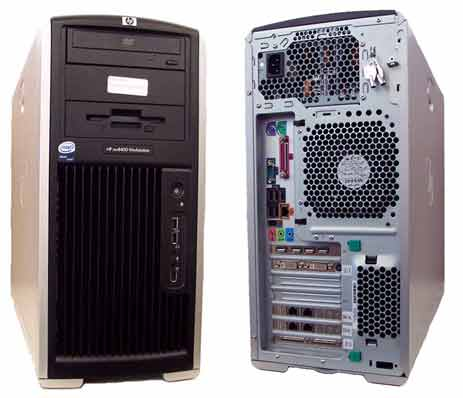
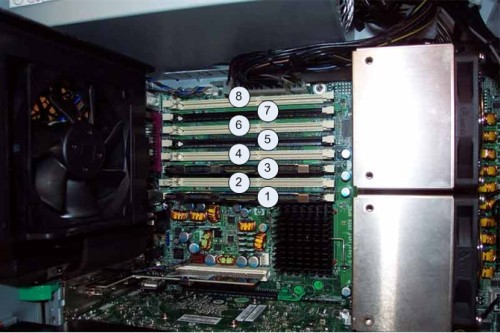
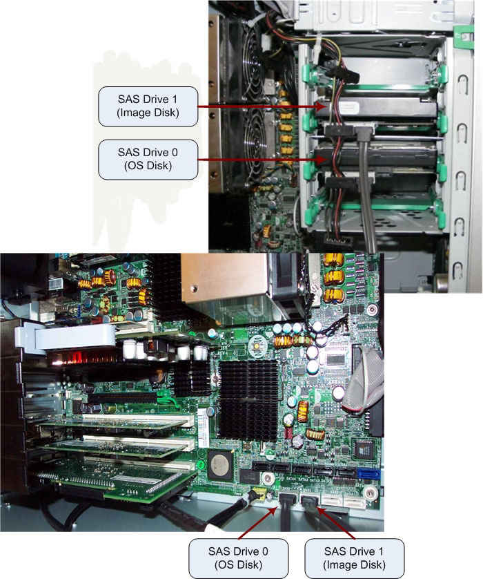

Operating Documentation
Direction 5193574-800, Rev# 22
LightSpeed 7.X Service Methods
Module Version 4.0, Version Date 8/16/10
Operating Documentation |
| Last revised: | 10 June 2010 |
The Host PC in the Global Operator’s Console (GOC) is the master computer that controls the operation of the CT systems. This PC controls the acquisition, reconstruction, display, archive, and output (film, DICOM, etc.) of patient data and images.
The Host PC accomplishes these tasks by taking input from the User via keyboard, mouse and trackball, and using this input, along with the operating and application software loaded on the Host PC, to control and communicate with the subsystems responsible for image generation, reconstruction, and display. The Host PC communicates via Gigabit Ethernet interface with the following:
Reconstruction Engine
Gantry/Table
AW and Xeleris Workstations
Hospital Network
The Host PC’s Video display ports, connected to two display monitors, handle visual display of the User I/F and Image Generation. The User’s Keyboard and Mouse connect with the Host PC via the standard PS/2 ports on the GOC5, and via USB or PS/2 ports on GOC6. Trackball and Service Key devices interface with the Host PC via USB ports. The Host PC’s integrated audio controller is used for the Autovoice feature and interfaces with the ICOM via standard analog audio PC connections on the Host PC. The Host PC also interfaces with external Peripheral Tower (MOD/DVD-RAM Optical Drives on GOC5 and MOD Optical Drive on GOC6) via the SCSI Bus. New for GOC6 is an USB Peripheral Tower which contains a DVD-RAM and DVD-R Optical Drives.
The GOC Host Computers have historically been PCs supplied by OEM vendor Hewlett Packard. The model discussed below is the xw8400 (Illustration 1), which is the latest in the xw8xxx series of PCs (after the xw8000 and xw8200) used in the GOC consoles. The following is a brief overview of the hardware and software theory associated with the xw8400.
| NOTE: | Obtain complete details of the HP xw8400 PC from Hewlett
Packard’s support web site: http://welcome.hp.com/country/us/en/support.html Search by PC model number and download the appropriate Technical Reference Guide. |
Illustration 1: Host Computer HP xw8400

The HP xw8400 PC is an Intel® Xeon® processor-based workstation configured by GE Healthcare for use as the Host PC in the GOC console. Its basic configuration is:
| Quantity | Component |
| 2 | Intel Zeon 5130 Dual Core 2.00 GHz Processors |
| 2 | HP DDR2, 667 MHz, 2 GB, REG ECC DIMM Memory Modules (total of 4 GB) |
| 4 | HP DDR2, 667 MHz, 2 GB, REG ECC DIMM Memory Modules (total of 8 GB for CT750HD Only) |
| 1 | CD/DVD Optical Drive |
| 2 | SAS Hard Disk Drives: 146 GByte 15K RPM |
| 1 | Nvidia Quadro FX1500 Video Card |
| 2 | Intel Dual Port GbE Ethernet NIC Cards |
| 1 | Adaptec 39160 SCSI I/F Card |
| 1 | QUAD PORT USB 2.0 PCI Card |
| 1 | 1.44 MB Floppy Drive |
| 1 | 800 Watt PSU |
The xw8400 motherboard (Illustration 2) utilizes the Dual LGA Socket Xeon Processor Motherboard (called the “Systemboard” in HP terminology) with:
2 Intel Zeon 5130 Woodcrest 2.0 Ghz Processors w/4MB shared L2 Cache
Front Speed Buss of 1333 MHz
8 Memory Slots (32 GB max.)
Integrated with:
Audio
GbE NIC Port (eth 4)
USB 2.0 ports (5 rear & 2 front)
SAS Controller
IEEE 1394 Firewire (not used)
Illustration 2: HP xw8400 Motherboard Layout

| Item | Description | Item | Description | Item | Description | Item | Description |
| 1 | Memory Fan | 11 | PCI (32bit, 33 MHz) | 21 | PCI-X 100 | 31 | Processor 2 Fan |
| 2 | PS/2 Keyboard / Mouse | 12 | Rear PCI Fan | 22 | PCI-X 133 | 32 | Hard Disk Activity LED |
| 3 | Parallel Port | 13 | PCI-E x16 (graphics) | 23 | PCI-E x16 | 33 | Clear CMOS Button |
| 4 | Serial Port | 14 | Battery | 24 | Front USB | 34 | Processor 1 Fan |
| 5 | USP Ports | 15 | PCI-E x8 | 25 | Serial SCSI (SAS) | 35 | Processor Power |
| 6 | Network / USB ports | 16 | Crisis Recovery Jumper | 26 | Serial ATA (SATA) | 36 | Processor 2 |
| 7 | Internal USB | 17 | Auxiliary Audio | 27 | Password Jumper | 37 | Processor 1 |
| 8 | IEEE 1394 | 18 | Front Audio | 28 | Front Chassis Fan | 38 | Memory Module Pairs |
| 9 | Audio | 19 | Front IEEE 1394 | 29 | Primary IDE | 39 | Memory Power |
| 10 | Rear Chassis Fan | 20 | Front Control Panel | 30 | Diskette Drive | 40 | Main Power |
The xw8400 is equipped to handle up to eight (8) memory DIMMS Modules in a variety of configurations. Based on the type of system on which the xw8400 is installed, the amount and configuration of memory modules may vary. The base configuration for CT is configured Dual Channel Mode Slots 1 & 3, each containing a 2 GB DDR2 REG ECC DIMM Memory Module for a total of 4 GB. SeeIllustration 3 for Memory Slot Assignments.
Illustration 3: HP xw8400 Memory Slot Assignments

IMPORTANT: Memory modules must be loaded in the following configurations:
| If loading... | install them in... |
| 1 DIMM | slot 1 (otherwise DIMMS must be loaded as matched pairs) |
| 2 DIMMs | slots 1 and 3 |
| 4 DIMMs | slots 1,3,5, and 7 |
| 6 DIMMs | slots 1 through 5 and 7 |
| 8 DIMMs | all slots |
Load the memory module pairs in order of size, from smallest to largest.
The xw8400 utilizes two Serial Attached SCSI (SAS) hard disk drives:
146 GB, 1K RPM, OS Disk (SAS 0)
146 GB, 1K RPM, Image Disk (SAS 1)
| NOTE: | The xw8400 uses SAS type Hard Disk Drives. These drives are not compatible with the previous generation of HP PCs (i.e., xw8000 or xw8200). Do not attempt to swap these drives between PC types. |
The following table describes how the two SAS Drives are partitioned:
| SAS Drive | Dev | Partitions | File System Approximate Size | Notes |
|---|---|---|---|---|
| 0 | sdb: 73.4 GB | sdb1 | 99 MB | Boot Partition |
| sdb2 | Linux Swap | |||
| sdb3 | 5.1 GB | Root Partition | ||
| sdb4 | Extended | |||
| sdb5 | Linux | |||
| sdb6 | 9.4 GB | /usr/interchange | ||
| sdb7 | 12 GB | /data | ||
| sdb8 | 105 GB | /usr/g | ||
| 1 | sdc: 146.8 GB | sdc1 | Extended | |
| sdc2 | Empty | |||
| sdc3 | Empty | |||
| sdc4 | Empty | |||
| sdc5 | 137 GB | /usr/g/sdc_image_pool |
The Image Storage Disk (SAS Drive 1) has just one physical hard disk drive and utilizes one large disk partition to hold patient data. Unlike previous Host PCs, the xw8400 does not use a RAID 0 configuration (Striped Array). The SAS interface bandwidth is large enough to store image data without the need to stripe (split) data across multiple drives; hence, RAID 0 configuration is no longer required.
| NOTE: | RAID 0 stripes data across multiple drives as an I/O performance enhancement scheme. Do not confuse this with other RAID configurations that save multiple copies of data on multiple drives (mirrored) for data security. |
The SAS controller is integrated on the PC’s motherboard, with the connection between motherboard and disk drives supplied via SAS cables. (See Illustration 4.)
Illustration 4: HP xw8400 SAS Hard Disk Drive Interconnect

The xw8400 utilizes an Ultra ATA CD/DVD optical disk drive connected directly to the primary master IDE buss on the motherboard.
The xw8400 has two Dual Port Gigabyte Ethernet (GbE) Adapter Cards installed in the PCI-X expansion slots (slots 6 & 7). These cards expand the xw8400’s Ethernet interface to 5 total external ports (eth0-eth4).
| Port ID | Port Address |
|---|---|
| A | eth2 |
| B | eth3 |
| C | eth0 |
| D | eth1 |
| Motherboard NIC Port (Orange) | eth4 |
A Nvidia Quadro FX1500 256 MB PCI-E x16 Video Card, located in Slot 2 in the xw8400 PC chassis, drives the Scan and Display monitors. The graphics card has 256 MB of fast GDDR3 memory and utilizes the latest PCI-E x16 buss.
An Adaptec 39160 SCSI I/F Card, located in Slot 7 in the xw8400 chassis, drives the Peripheral Tower (External MOD/DVD Optical Drives) and the optional DASM (Film Formatter I/F). Combining a 64-bit PCI interface with two Ultra160 SCSI channels, this card moves data at 160 MB per second. The Adaptec SCSI Card 39160 can support up to 30 devices on its buss.
An 800 Watts ATX style PC PSU powers the xw8400. The rated voltage range is 100-240 VAC, with line frequency of 50-60 Hz, auto switching, and power factor correction.
See the following Illustration for Connection Labeling of the xw8400 PC.
Illustration 5: Host Computer Connections

| Connection | GOC5 | GOC6 |
| A | Motherboard USB - NOT USED | Motherboard USB - Keyboard |
| B | Motherboard USB - NOT USED | Motherboard USB - Mouse |
| C | Motherboard USB - NOT USED | Motherboard USB - Trackball |
| D | Motherboard USB - Service Key | Motherboard USB - USB P-Tower, DVD-R/W |
| E | Motherboard USB - Trackball | Motherboard USB - USB P-Tower, DVD-RAM |
| F | Motherboard GbE Ethernet Port - Switch Port 8 | Motherboard GbE Ethernert - CNS Port 9 |
| G | Expansion Card USB - NOT USED | Expansion Card USB - Barcode Reader |
| H | Expansion Card USB - NOT USED | Expansion Card USB - Service Key |
| I | Expansion Card USB - NOT USED | Expansion Card USB - External Hard Drive |
| J | Expansion Card USB - NOT USED | Expansion Card USB - NOT USED |
| K | PS/2 Mouse | PS/2 Mouse * |
| L | PS/2 Keyboard | PS/2 Keyboard * |
| M | Serial Port - Modem (optional) | Serial Port - Modem (optional) |
| N | Audio Out - ICOM | Audio Out - ICOM |
| O | Audio In - ICOM | Audio In - ICOM |
| P | Monitor 2 - Scan | Monitor 2 - Scan |
| Q | Monitor 1 - Display | Monitor 1 - Display |
| R | Expansion Card GbE Ethernet Port B - Table | Expansion Card GbE Ethernet Port B - NOT USED |
| S | Expansion Card GbE Ethernet Port A - Hospital Network | Expansion Card GbE Ethernet Port A - Hospital Network |
| T | Expansion Card GbE Ethernet Port D - TGP | Expansion Card GbE Ethernet Port D - TGP |
| U | Expansion Card GbE Ethernet Port C - DARC | Expansion Card GbE Ethernet Port C - CNS Port1 |
| V | SCSI 2 - DASM | SCSI 2 - DASM |
| W | SCSI 1 - MOD Drive | SCSI 1 - MOD Drive |
| * GOC6 Consoles may use PS/2 Mouse and/or Keyboard | ||
Like previous Host PCs used in the GOC console, the xw8400 is loaded with a Linux-based Operating System (OS), and GEHC’s Application (APPS) software. The Load From Cold procedure found in the Software folder of this publication provides procedures for software loads.
The HP xw8400 has been verified and validated to work in the GOC5 console types. In addition, backward compatibility has been verified for the GOC3 and GOC4 consoles. The xw8400 Host PC can be used in GOC3 and GOC4 consoles as long as the base system software is loaded with the revision required to support this PC.
The xw8400 is equipped with a ROM-based initialization firmware that starts the PC hardware. The BIOS of the computer is a collection of machine language programs stored as firmware in ROM. The BIOS ROM includes such functions as POST, PCI device initialization, Plug 'n Play support, power management activities, and the Computer Setup (F10) Utility. See xw8400 Host PC BIOS Setup for BIOS setup and configuration.
| NOTE: | The xw8400 BIOS ROM has a built-in Flash utility for updating and recovering the BIOS firmware. Bootable Floppy or CD-Rom is no longer required to flash this firmware. |
(For CT Systems) Support for the xw8400 requires the following GEHC OS and APPS software versions:
OS: GEHC Linux Version 6.2.9 or newer.
Apps: Version 07MW18.4 (with Service Pack 2.0) or newer.
(For CT Systems) Support for the xw8400 requires the following GEHC OS and APPS software versions:
OS: CT750 HD and VCT Xte - GEHC Linux Version 5.3.8 or newer. VCT XT - GEHC Linux Version: 5.2.13 or newer.
Apps: CT750 HD - Version 08MW39.4 or newer. VCT XT - Version 08MW33.2 or newer. VCT XTe - Version 09MW08.10 or newer.